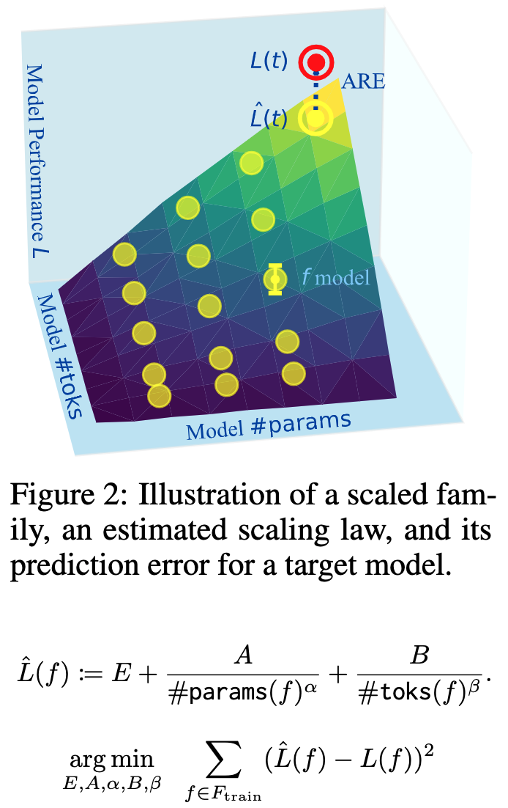
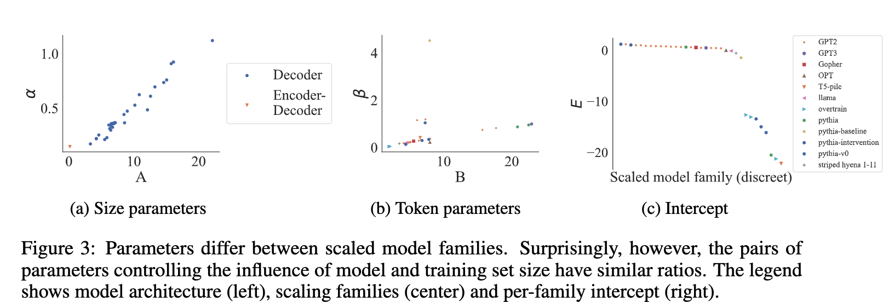
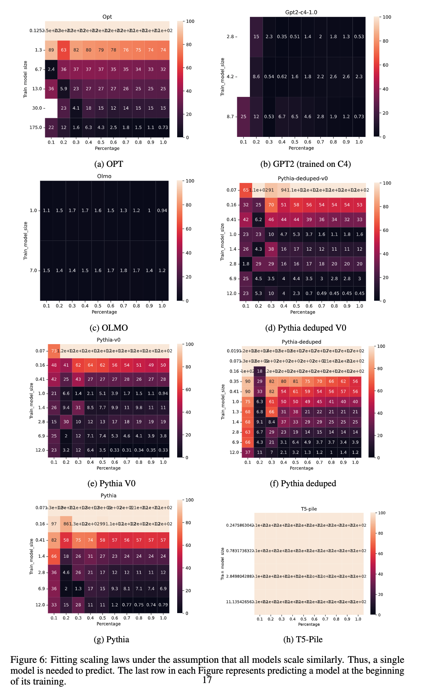
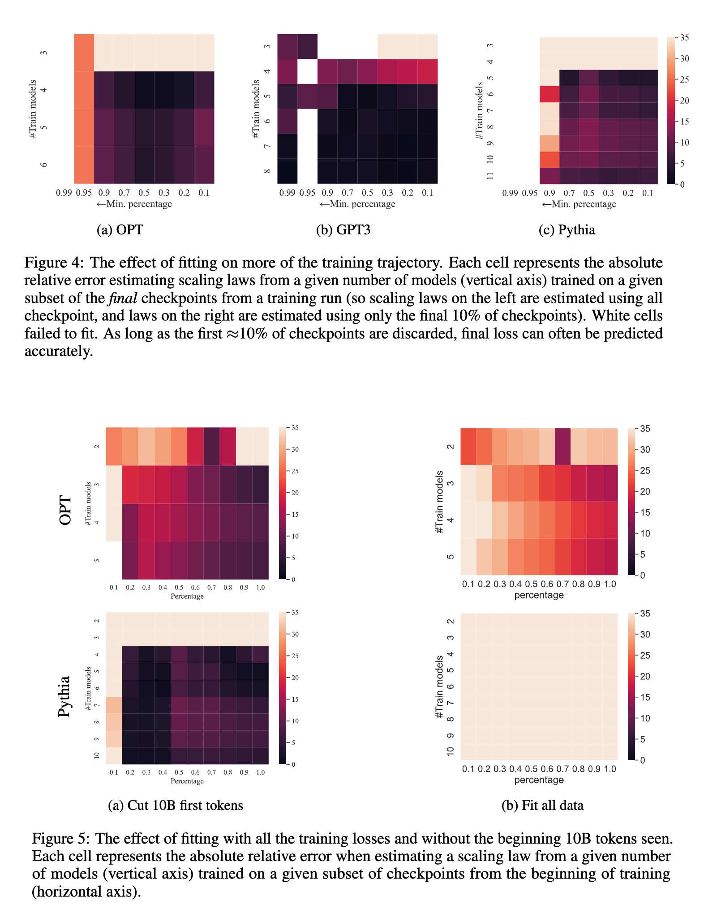
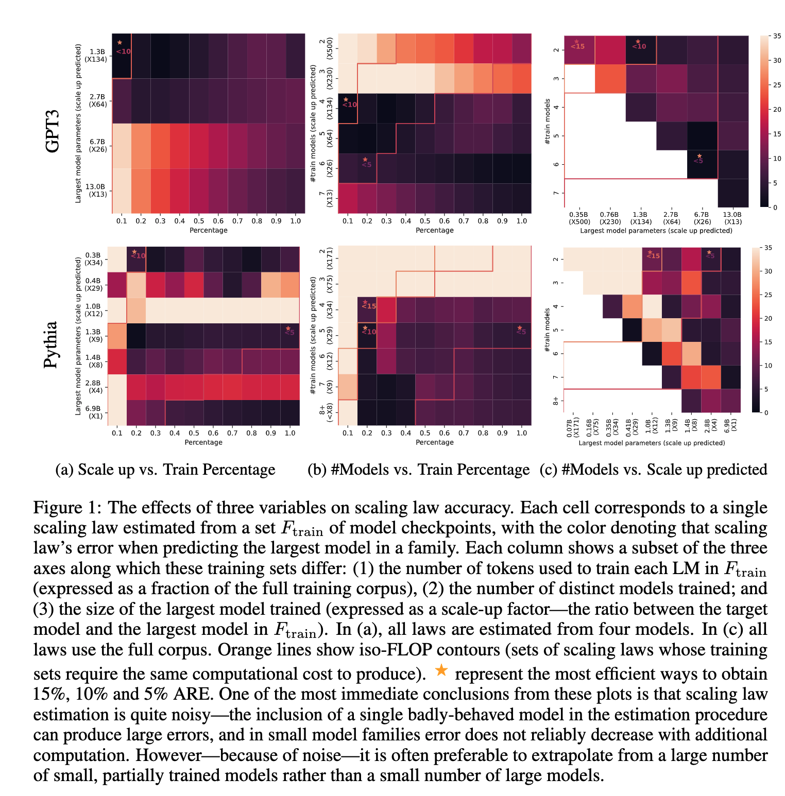

A Hitchhiker’s Guide to Scaling Law Estimation
Scaling laws have been discussed a lot in the past few years. The OG paper on scaling laws is still one of the best, but this latest paper from IBM and MIT provides a fresh perspective. Here is a quick summary in case you are interested:
Why should one care about scaling laws?
- Design choices like architectural modification, data changes, etc., are crucial, but every option is expensive to evaluate at scale.
- What if we use smaller models to assess the design choices? Will the findings be upheld when using a larger model?
- A scaling law extrapolates the performance of a target model from the performance of a set of models with fewer parameters or smaller training sets. A high-quality scaling law accurately predicts the test performance of the target model.
Defining a scaling law
- A scaling law estimates the loss of a costly model by training cheaper ones that share a pretraining procedure and differ by some hyperparameters, typically model size (num_params) and number of tokens seen during training (num_toks).
- The authors define a scaled model family f as a set of models, with each f ∈ F differing only in size num_params(f ) and number of tokens num_toks(f ).
- They divide this into subsets. First, the maximal parameter family max params (F) containing models in F with the largest number of parameters. This family will generally include the target model(s) whose behavior we wish to predict t ∈ Ftarget. Second, the q-maximal token family max num_toks (F, q) contains all models in f trained on at least a q-sized fraction of the training set.
- A scaling law L(f | F ) estimates the performance of a new model f given a model family F and is defined as shown below:

E is a baseline capturing the general performance of the scaled family. A and α describe the scaling effect of num_params, while B and β describe the scaling effect of num_toks. These parameters are estimated by first collecting a set of training models Ftrain, then minimizing the reconstruction error as shown above. L(f ) denotes the empirical negative log-likelihood of some held-out data under the model.
How Well Can I Expect a Scaling Law to Predict?
- To estimate this, we need to know what is considered a meaningful change when comparing two models (of the same family). The authors found that any design change that yields less than a 4% change in performance has not been considered meaningful in the literature.
- Also, the variance across the same model with restarts reaches a 3.5% difference. Thus, a 4% difference bounds the best goodness of fit we should expect or require of scaling laws.
- The Absolute Relative Error (ARE) is bounded by 4% and can reach 20% with certain design choices.
When I Train a New Model, Do I Even Need a New Scaling Law?
- Different model families exhibit different scaling behavior.
- Every design choice like the choices of architecture, training procedure, or the dataset, affects the form of scaling laws. Hence, the behavior of a new model family may require a new scaling law.
- Can’t we borrow the scaling behaviors between two different model families even if it results in poor or biased estimates? To that end, the authors set the num_params scaling parameters (A, α) to fixed values reported in the paper titled Scaling data-constrained language models and estimate the remaining parameters for individual model families.
- The authors found that predictions generalize, and a constant num_params scaling factor is enough for most models (except the encoder-decoder T5-Pile). However, error rates are bigger than in the source family, and predictions for larger models are worse.

Can I Train the Target Model a Bit Instead of Many Small Models?
- A reasonable assumption to make at this point is that training the target model for a bit can be much better than wasting time on training many small models.
- A good thing about the above assumption is that extrapolation is only required for num_tokens as the number of parameters is fixed now.
- As of now, reliable estimates with this approach require up to 30% of the full training run, but this is a good option for future research.
Are Even Simpler Baselines Enough?
- Let us take another example. Suppose we have two models belonging to the same small model family. One model has the best performance, and the other model has seen more data. Are these baselines enough to estimate the performance of the target model without fitting a scaling law?
- The model with the best performance is expected to be closer to the performance of the target model. The authors found that the baselines suffer more than 15% error, mostly above 10%, rarely get below 5%, and 18% ARE is observed on average across all scaled families.

Which is good for estimates: Intermediate checkpoints or the final checkpoint?
A common methodology is to train different models with different numbers of tokens. Most people never use intermediate checkpoints as the assumption is the learning rate schedule renders losses from intermediate checkpoints uninformative.
The authors find that almost all, except for the first few checkpoints, help scale laws. Specifically, models trained on less than 10B tokens are noisy and should be excluded from scaling laws. These models or checkpoints can introduce significant ARE in estimating the performance of the target model.

How Big a Model Should I Train?
- It is implicit that bigger models where the num_params are closer to the target model are more effective for reliable scaling laws.
- However, the authors found that the effect is neither strong nor monotonic and varies between model families. For example, fitting on all F results in the lowest ARE in most cases. However, in the case of GPT, Gopher, and OPT, predicting with the smallest four models is enough to achieve less than 10% error. OTOH, the smallest models in Pythia are not predictive enough.
- The authors suggest diversifying and training each model on differing hyperparameters (seed, num_params, num_tokens) and maximizing the information gained.

How Many Models Are Required for Reliable Predictions?
- Larger models are better, but a group of smaller models is equally good.
- Increasing the number of models helps decrease ARE. Overall, five models are a safe bet, and more would improve the robustness of the result. And these models can be small.
What Parameters Do I Need to Estimate?
- The authors computed the PCA of five learned parameters and found that three parameters explain 99.49% of the variance.
- Though the above finding holds for a large number of model families, exceptions exist, especially in encoder-decoder models like T5-Pile.
- Overall, scaling laws might have fewer degrees of freedom than described in the literature. num_params and num_tokens remain the most important ones. The authors left out the learning rate schedule for future research.